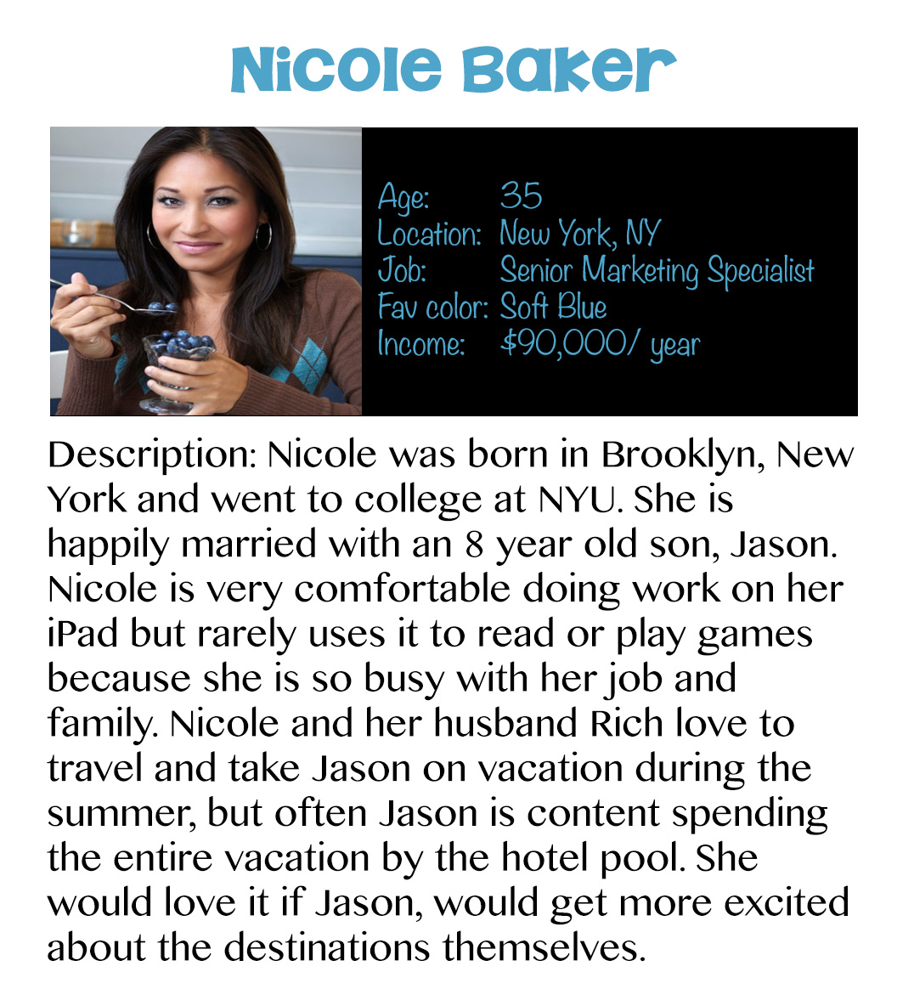

Young Traveler
Young Traveler is a travel iPad magazine created for kids between the ages of 6 and 12. I created Young Traveler for my final project in my Interaction Design Fundamentals class at CMU. I was tasked with finding a gap in the market of iPad magazines in the area of travel and then creating pages for that magazine.
Process
A competitive analysis of travel magazines I conducted with two other students showed several gaps in the market of travel magazines. I focused on creating a proof of concept for a travel magazine for kids between the ages of 6-12 years old. The goal of this magazine is to get kids excited about the adventures waiting at different destinations.
First, I created three personas for my magazine.

Then, I created a moodboard to capture the feel I wanted my magazine to convey (fun, colorful, and exciting) and to inform my design language.
Following are the cover and table of contents pages. The table of contents shows some of the content I was not able to design visually but thought would be important in the success of a magazine for children. These elements include interactive games, and stories from other young travelers.
Finally, here are a couple of the content pages.
This project was completed in a span of 5 weeks in Fall 2013.
Back to all projects!